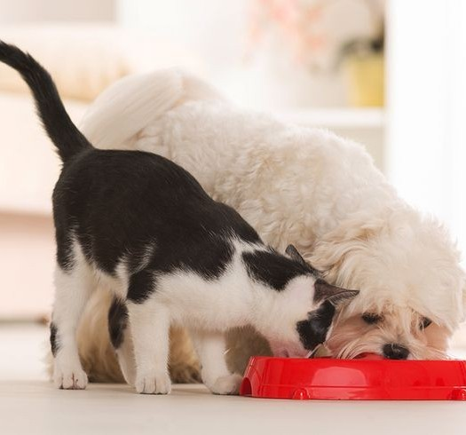

Quais são as principais diferenças entre gato e cachorro?
Velocidade:

Gatos são ágeis e excelentes em explosões de velocidade, atingindo até 48 km/h. Cachorros variam amplamente; algumas raças, como Greyhounds, podem chegar a 72 km/h, enquanto raças menores são mais lentas.
Alimentação:
Gatos são carnívoros estritos, necessitando de proteínas exclusivamente de origem animal. Cachorros são onívoros e podem consumir uma variedade de alimentos, incluindo vegetais, carnes e carboidratos.
Tempo de Dormir: Gatos dormem mais, de 12 a 16 horas por dia, enquanto os cachorros geralmente dormem entre 10 e 14 horas, dependendo de idade e estilo de vida.
Longevidade: Gatos vivem, em média, 12 a 18 anos; cachorros têm uma expectativa mais variável, entre 10 e 15 anos, sendo que raças pequenas tendem a viver mais.
Tamanho: Gatos têm tamanhos mais uniformes, cerca de 23 a 25 cm. Cachorros apresentam uma enorme diversidade, indo de raças como Chihuahua (menos de 15 cm) até Dogue Alemão (até 90 cm).
Peso: Gatos pesam, em média, de 3 a 5 kg, enquanto cachorros podem variar de 2 kg (raças pequenas) a mais de 90 kg (raças gigantes).
Habilidades de Caça: Gatos são predadores solitários, especializados em emboscadas e ataques rápidos. Cachorros costumam caçar em grupo, utilizando trabalho em equipe.
Socialização: Gatos são mais independentes e geralmente preferem interações menos frequentes. Cachorros são mais sociais e criam vínculos profundos com seus donos e outros cães.
Comunicação: Gatos usam miados, ronronados e linguagem corporal discreta. Cachorros têm uma gama mais ampla de comunicação, incluindo latidos, rosnados e posturas corporais.
Personalidade: Gatos tendem a ser mais reservados e seletivos em seus relacionamentos. Cachorros são conhecidos por serem mais extrovertidos e expressivos.
Habilidade de Treinamento: Cachorros são mais fáceis de treinar devido à sua natureza social e desejo de agradar. Gatos também podem ser treinados, mas requerem abordagens diferentes e mais paciência.
Habitat: Gatos se adaptam bem a ambientes pequenos e podem viver confortavelmente em apartamentos. Cachorros precisam de mais espaço e geralmente requerem passeios regulares.
Energia: Cachorros são mais ativos e necessitam de exercícios regulares. Gatos têm energia em "explosões", mas passam boa parte do dia descansando.
Ciclo Reprodutivo: Gatas têm múltiplos períodos de cio ao longo do ano. Cadelas costumam ter dois ciclos de cio anuais.
Higiene: Gatos cuidam da própria higiene, lambendo-se regularmente. Cachorros dependem mais dos donos para banhos e cuidados.
Curiosidade e Exploração: Gatos são mais aventureiros e curiosos em relação a pequenos espaços ou objetos. Cachorros exploram ambientes de forma mais social e dinâmica.
Adaptação ao Clima: Gatos geralmente preferem climas quentes e podem se incomodar com baixas temperaturas. Cachorros têm maior adaptação ao clima, com variações dependendo da raça.
Independência: Gatos são mais autossuficientes e podem ficar sozinhos por períodos mais longos. Cachorros precisam de companhia e podem desenvolver ansiedade de separação.
Som emitido: Gatos têm vocalizações mais silenciosas e suaves, enquanto cachorros podem ser mais barulhentos e expressivos.
Custo: O custo de manter um gato tende a ser mais baixo (alimentação, cuidados gerais). Cachorros podem ser mais caros, especialmente raças grandes ou com necessidades específicas.